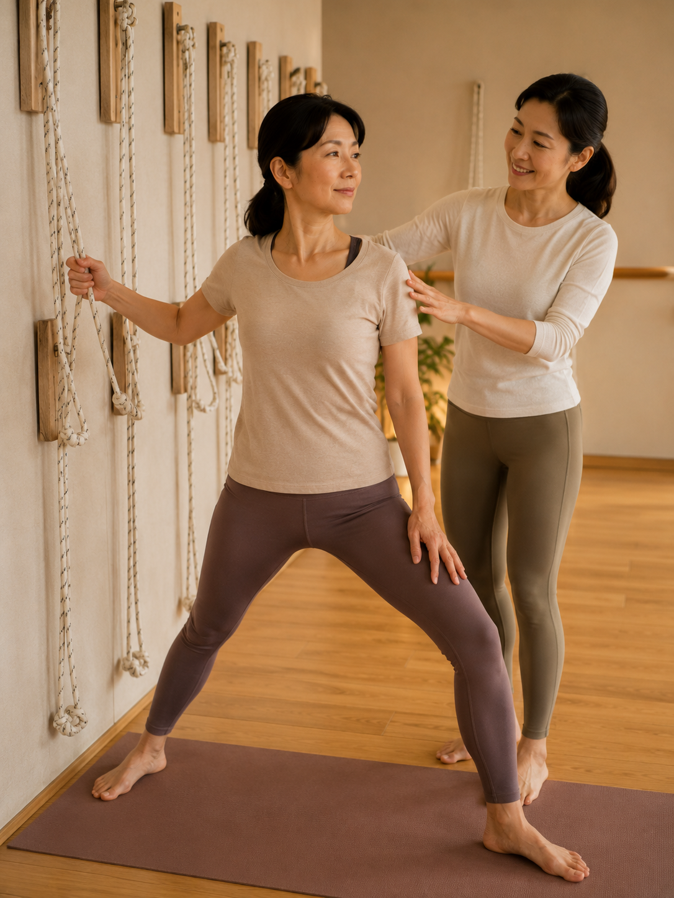

身體很硬、沒基礎，為什麼反而更適合壁繩

- 「等我筋骨練軟了再去練瑜伽」在運動生理學上是完全顛倒的盲點；正因為僵硬脆弱，才最需要外在支撐。
- 身體僵硬往往不是肌肉太短，而是大腦感知到「深層核心無力、關節失穩」而啟動的保護性張力鎖定。
- 在地面硬拉會激發肌梭牽張反射（Stretch Reflex），讓肌肉防禦性強直痙攣，造成越拉越緊、關節折疊代償。
- 壁繩提供 30%～70% 物理自重卸載，徹底消除跌倒恐懼，在大腦解除警報的安全窗格內溫和恢復關節滑動。
- 若僵硬合併晨間起床僵硬超過 1 小時、周邊神經觸電放射麻痛或關節紅腫熱痛，應優先就醫排查病因。
「老師，我站直往前彎，連膝蓋都摸不到，整個人硬得像一塊木板，這樣真的能去上瑜伽課嗎？」在鑫彥瑜珈的諮詢現場，這幾乎是每一位初學者開口的第一句話。在主流印象中，瑜伽教室彷彿只屬於那些能把腳掛在脖子上、隨意下腰劈腿的柔軟高手。然而，在運動生物力學與神經醫學的真實視角下：身體越僵硬、越沒有運動底子的人，反而越應該從壁繩瑜伽開始！
神經生物學真相：身體僵硬，是大腦的「保護性張力鎖定」
首先，請徹底卸下心中的自責與挫折感。在解剖生理學上，除非骨骼發生實質結構畸形，絕大多數人的「肌肉本體」天生都具備足夠的延展潛能。那為什麼你輕輕一彎腰就覺得後背像要被扯斷？
- 深層穩定失守，表層被迫代償：長年久坐打電腦，使得你的骨盆底肌、腹橫肌、多裂肌與深層頸屈肌長年處於休眠失憶狀態。當人體站立或活動時，失去深層核心支撐的關節（如腰椎 L4–S1、胸椎、骨盆薦髂關節）就會面臨剪切力失穩的危機。
- 保護性張力鎖定（Protective Tension Locking）：人體的大腦非常聰明，其最高指導原則是「生存與防受傷」。當大腦偵測到關節內部缺乏深層肌力穩定時，為了防止你在重力下關節脫位或椎間盤破裂，中樞神經系統會立即下達緊急命令：強制讓表層大肌群（如上斜方肌、豎脊肌、膕繩肌）維持在高張力的痙攣收縮狀態！
- 換言之，你身上那些硬得像石頭一樣的緊繃部位，本質上是大腦為了保護你而自製的「肉體石膏夾板」。
為什麼在一般地板硬拉，只會「越練越僵硬」？
如果你帶著一副「保護性鎖定」的僵硬軀體，直接走進一般的墊上瑜伽班，後果往往是一場災難：
- 肌梭（Muscle Spindle）牽張反射暴走：肌肉纖維內部密布著感受長度變化的本體受器——肌梭。當你在平地上勉強前彎、手碰不到地身體搖晃時，大腦感知到「極度不穩且可能撕裂」，肌梭會瞬間觸發「牽張反射（Stretch Reflex）」，通過脊髓單突觸反射強烈命令肌肉收縮對抗。你越是用力往下壓，大腦命令肌肉咬得越死。
- 關節小面嵌頓與代償折疊：因為碰不到地，為了讓「外形看起來做到了」，學員只能瘋狂弓起胸椎、低頭聳肩、或是把壓力全集中在少數活動度較大的腰椎節段（代償折腰），結果拉筋不成，反而造成椎間盤嚴重後凸受壓與小面關節滑膜發炎。

壁繩如何破解死局？——「無痛安全窗格」與自重物理卸載
壁繩瑜伽之所以成為僵硬族群的救星，在於它從根本上改寫了大腦的神經力學輸入：
- 分擔 30%～70% 體重負擔：透過高承重繩帶環抱骨盆或腋下胸腔，地心引力的垂直壓迫被瞬間卸除。當學員體會到「繩子接住了我」的物理事實時，大腦前庭系統與交感神經的警報瞬間解除，威脅感知降為零，中樞神經系統終於願意授權表層代償肌群「卸下防禦性防線」。
- 閉鎖鏈力線回饋（Closed-chain Propriceptive Feedback）：牆面與拉緊的繩帶提供了堅固的力學平面。僵硬的新手不需要在空中憑空找平衡，只要依循繩索的反向拉力，就能自動鎖定對稱的骨骼軸線。
- 創造無痛安全窗格（Pain-Free Safety Margin）：在完全不引起尖銳疼痛的活動範圍內，原本因為缺血、缺氧而黏連的深層筋膜與關節囊，得以在溫和的微牽引中吸納組織液（Re-hydration），恢復結締組織的彈性滑動。

身體很硬的新手，在壁繩上的三大不可替代優勢
| 訓練維度 | 傳統墊上硬拉的困境 | 壁繩瑜伽（Wall Rope）的解法優勢 |
|---|---|---|
| 手碰不到地時 | 只能駝背折腰代償，腰椎承受巨大剪切力 | 抓握高位或中位繩帶，在脊椎完全延展下輕鬆前伸 |
| 手腕與膝蓋負擔 | 四足跪姿或平板撐手腕劇痛，膝蓋下跪刺痛 | 繩索分擔體重，手腕零負擔，膝關節間隙被物理拉開 |
| 心理恐懼與緊張 | 隨時害怕重心不穩摔倒，肌肉反射性繃緊 | 雙重錨點懸掛提供絕對安全感，副交感神經自然主導 |
| 深層肌力募集 | 光是支撐身體就耗盡體力，無法啟動核心 | 卸除平衡負擔後，能精準孤立喚醒前鋸肌與臀中肌 |
臨床急症紅旗（Red Flags）：哪些僵硬不能直接拉伸？
雖然多數身體僵硬屬於良性的力學失衡，但若伴隨以下任何醫療紅旗警訊，嚴禁隨意拉筋，應優先至醫院專科檢查：
- 晨間關節僵硬超過 1 小時：早晨起床時雙手手指、手腕或雙腳關節僵硬如冰，且必須活動超過 1 小時才能稍稍緩解，或伴隨關節對稱性紅腫熱痛，高度疑似類風濕性關節炎（RA）或強直性脊柱炎（AS），需由風濕免疫科抽血與 X 光檢查。
- 牽拉伴隨觸電般放射麻痛：在彎腰或伸展大腿時，臀部向下一路電擊刺痛至小腿或腳底（典型坐骨神經根壓迫），切忌強行拉伸膕繩肌，以免加劇神經發炎水腫。
- 急性肌腱韌帶撕裂傷：跌倒扭傷後局部有明顯皮下血腫、觸痛劇烈或關節有脫臼不穩感，需先確認軟組織完整性。
給僵硬的身體一次被溫柔接住的機會
不要再等到「變軟」才來練習，正是因為現在很硬，才最需要專業設備的支撐。鑫彥瑜珈提供專利 AI 2D 體態檢測首次體驗，透過高精準度骨骼幾何線條捕捉，結合專業老師 20 分鐘當面逐行解讀，幫你找出阻礙身體放鬆的核心盲點，讓改變在安全中自然發生。
預約首次 NT$299 AI 體態檢測（原價 NT$699）本文為運動解剖學與神經生理學衛教知識分享，非醫療診斷或治療處方。若有關節發炎病史、嚴重骨質疏鬆或脊椎滑脫，請先諮詢合格醫療專業人員。
常見問題
身體非常僵硬、手往前彎連膝蓋都摸不到，真的適合練壁繩瑜伽嗎？
非常適合，甚至比柔軟度好的人更適合從壁繩起步。身體極度僵硬通常是大腦因為深層核心無力或關節不穩，下達命令讓表層大肌群死死緊繃的「保護性收縮」；在一般地板上硬拉會激發大腦的恐懼防禦反應，導致越拉越緊，而壁繩能提供穩定的外在骨骼支撐並分擔 30% 到 70% 的自重，讓大腦感覺安全並主動釋放防禦性張力，在完全無痛的條件下漸進恢復關節滑動。
為什麼我多年來天天在家拉筋，身體卻完全沒有變軟？
因為多數人的伸展方式觸發了神經生理學上的「肌梭牽張反射（Stretch Reflex）」。當你忍著劇烈痠痛硬壓、彈震或快速拉扯時，肌肉內的肌梭會誤判為肌肉即將斷裂，立刻向脊髓發出反射信號命令肌肉強制對抗收縮；此外，若未先喚醒無力的深層穩定肌群，大腦為了保護關節不脫位，也不會允許表層代償肌肉放鬆，必須先透過壁繩建立穩定力線，身體才敢真正釋放僵硬。
壁繩是怎麼在動作中幫助身體僵硬的人避免代償的？
壁繩透過多段繩扣高度微調與閉鎖鏈力線支持，徹底消除了「手碰不到地」的力學困境。例如在進行腿後側或前彎伸展時，學員可以抓握合適高度的繩帶，在維持骨盆中立與脊椎完全延展的前提下進行活動，不需要為了勉強碰到腳趾而拱背駝背、骨盆後傾或擠壓腰椎小面關節，大幅杜絕「為了外形而代償受傷」的力學風險。
身體僵硬的新手，上課時需要自己準備很多輔具嗎？
完全不需要。壁繩瑜伽教室本身就是最完善的輔具支持系統，除了牆面高低配置的高承重繩帶外，教室現場備有各種厚度的天然橡膠瑜伽墊、高密度無毒瑜伽磚、專用抱枕與伸展帶；老師會依據每位學員當天關節活動度的即時反饋，靈活疊加輔具支持，學員只需穿著舒適運動服到場即可。
如果身體僵硬伴隨哪些異常症狀，不能直接上課而應先就醫？
若關節僵硬在清晨起床時特別嚴重且持續超過 1 小時（疑似類風濕性關節炎或強直性脊柱炎等自體免疫關節炎）、關節處有局部紅腫熱痛、在伸展時出現如通電般向下傳導的放射性麻痛（周邊神經根壓迫）、或曾有未完全癒合的骨折與肌腱韌帶嚴重撕裂傷，嚴禁冒然進行伸展練習，必須第一時間至風濕免疫科、骨科或復健專科接受醫學檢查。